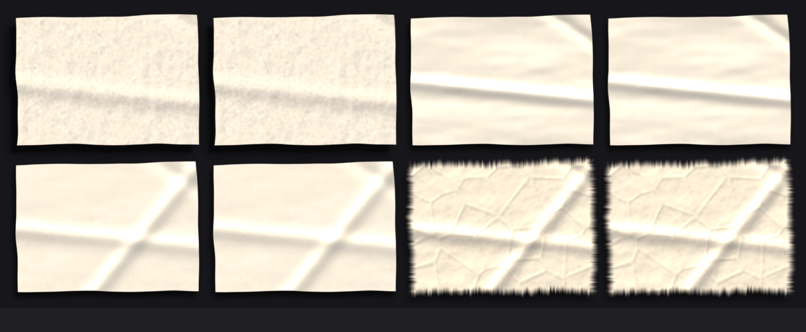
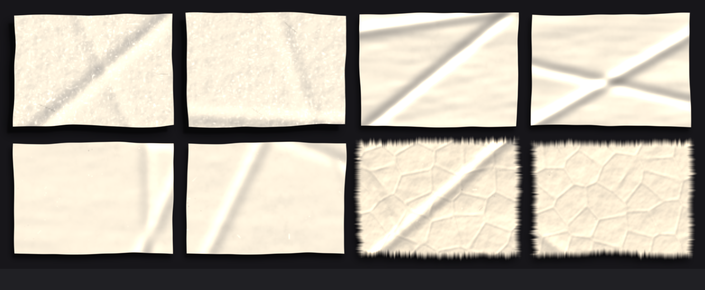

Four presets, each rendered twice, everything switched on, at demo card size. Two of the same preset side by side is the test: on a real page those are two different cards, and they should not be the same sheet of paper.
← the demo · why the hash changed · every surface
paperlab's constants: periodic noise hash, one fixed seed for every surface, and the inert skew term. The creases land in the same place on every sheet because folds are positioned in sheet-relative coordinates.

Per-surface seed, aperiodic integer hash, working dark-skew. Same presets, same sizes, same code path otherwise.
